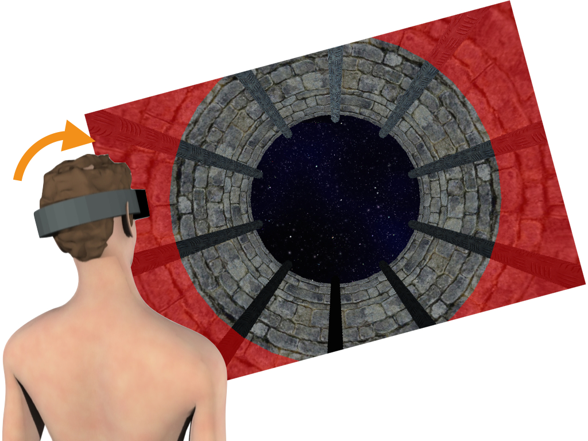
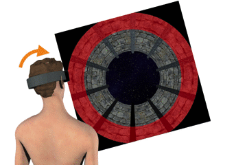
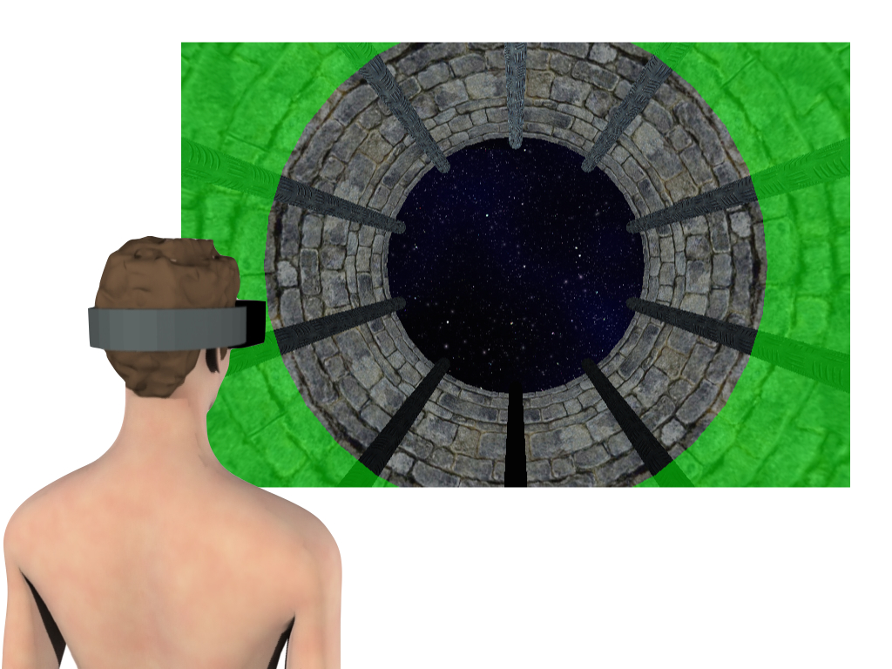

Step 1: Straighten Head
If the halo is red you must reorient your head:

Look straight ahead then slowly tilt your head on your shoulders. This will make the halo turn progressively from red to green:

When the halo pops to bright green, hold this position.
